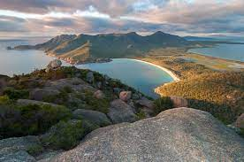
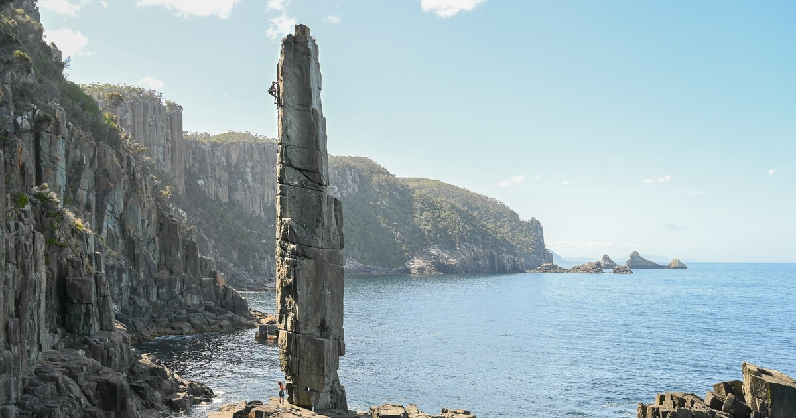

Freycinet is one of the more "famous" crags due to it's picturesque atmosphere, all the toilet facilities you could ever need, a super short approach from the campsite and free camping! There is also tons of great hiking and the famous Wine Glass Bay lookout for your rest days!
 Click here to find out more about Freycinet National Park. Click here to visit theCrag webpage for Freycinet National Park.Fortescue Bay is home of the famous sea stacks including the Totem Pole, Candlestick and Moai! Chocker block with tourists and luxurious paid camp grounds, you'll be vying for a patch of grass next to the beach to set up camp and battling with other climbers for a chance at one of the more famous routes
 Click here to find out more about Fortescue Bay. Click here to visit theCrag webpage for Fortescue Bay.